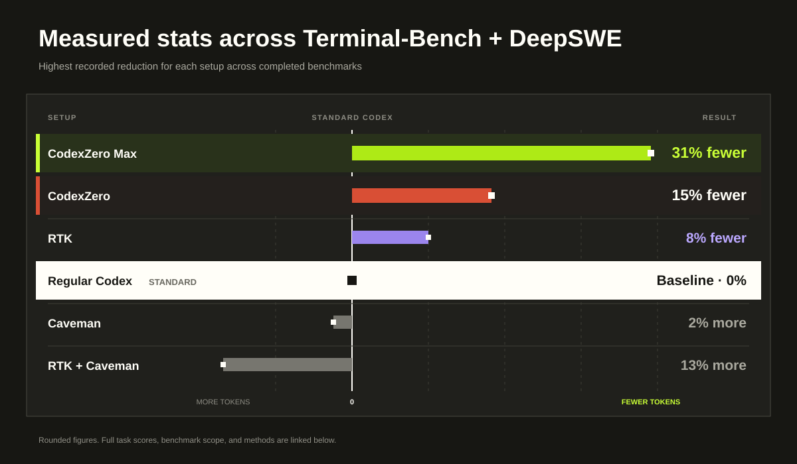
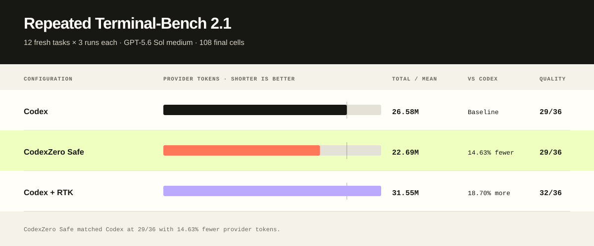

Run normally
Your commands, model, tools, and project instructions continue to work as before.
Less input. Same task score.
CodexZero recorded the largest token reduction in our completed comparisons. In the strongest repeated test, it used 15% fewer tokens and matched Codex’s task score.

Repeated benchmark
Codex and CodexZero each completed the same 12 software tasks three times. CodexZero matched the final score while processing 3.89 million fewer tokens.

Install
CodexZero installs beside your existing setup, so regular Codex remains available whenever you want it.
irm https://raw.githubusercontent.com/Retro2512/CodexZero/main/scripts/bootstrap.ps1 | iex
curl -fsSL https://raw.githubusercontent.com/Retro2512/CodexZero/main/scripts/bootstrap.sh | sh
Supports Windows x64, Intel Mac, and Apple silicon Mac.
codex-zero run
Start the optimized CLI.
codex-zero savings
See the tokens saved on your own work.
codex-zero stock
Open regular Codex at any time.
How it works
CodexZero keeps the original command result available, removes repeated text when it can, and otherwise leaves the result alone.
Your commands, model, tools, and project instructions continue to work as before.
Repeated command output can be replaced with a shorter reading copy.
If nothing gets smaller, CodexZero sends the original result unchanged.
Two settings
Standard keeps Codex’s normal instructions and shortens eligible command results. It is selected by default.
The setting used for the repeated 15% result.
A leaner setting for repeatable work. Switch modes whenever you want.
Quick answers
No. It installs beside Codex, and codex-zero stock opens your regular setup.
It shortens eligible command results before the model reads them again. The full result stays available.
CodexZero reduces the input tokens it changes. Your actual bill or plan usage also depends on output, caching, pricing, and your workload.
Ready when you are